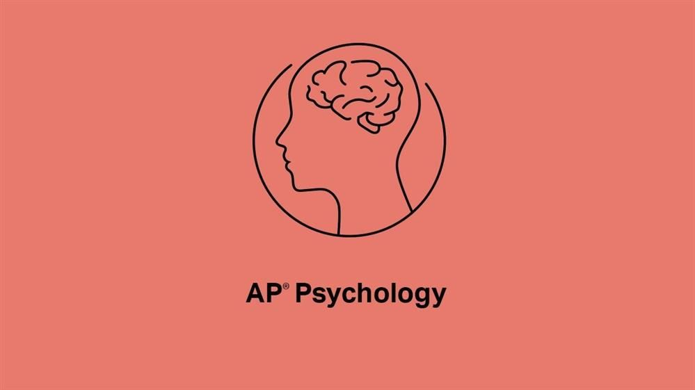

AP PSYCHOLOGY · COURSE OVERVIEW
Builds the biological foundation of psychology — the starting point for understanding all behavior and mental processes.
Focuses on how humans acquire, process, store, and retrieve information.
Explores human development across the lifespan and systematically introduces core theories of learning.
Explores how individuals think about, influence, and relate to others, and how personality forms and is assessed.
Focuses on defining mental health, classifying and treating psychological disorders, and positive psychology.
College Board Course and Exam Description